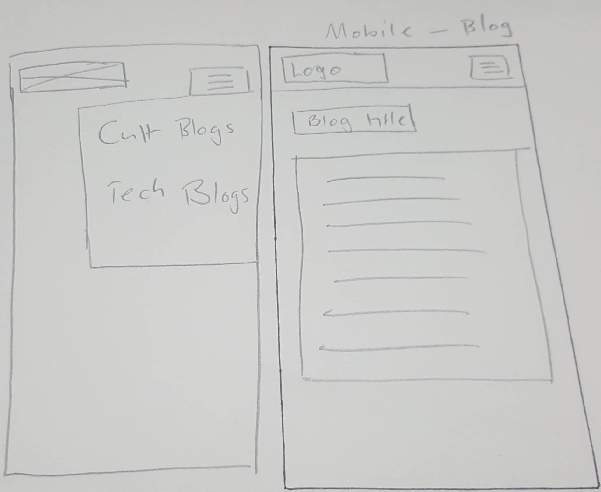

How did the 'process over product' concept affect the way you tackled the site redesign and rebuild?
To be honest... After a while I completely forgot about this. I do in general like to make sure code
is structed correctly so that was always an element of it, but I did get carried away in perfectionism
trying to make individual elements look and act the way I wanted them to. I will bear this in mind in the
future though.
What did you think about meditation before reading chapter 2?
I think it's a common misconception to associate meditation with new age hippies, pseudoscience, etc, so
I've found it interesting to have that perception debunked. I've also used it before to calm down or
go to sleep but I didn't know it had such scientifically evidenced benefits in general.
What new things have you learnt about meditation?
Primarily I had no idea that mindfulness meditation can improve attention- given I've mentioned my ADHD
before the benefits from that are obvious and I'm looking forward to seeing that improve! (I also really
like the fact that it views getting distracted as an inevitable opportunity for growth, rather than
something to reprimand yourself over, which is a positive thing to carry across to all work.)
Did any of the suggested meditation techniques stand out to you?
I personally prefer the "easy way" of focussing on breathing- I'm used to doing that already. It also
means I can listen to soothing music while meditating (I have tinnitus that distracts me endlessly if
I don't have sound of some kind), and can focus on aligning my breathing with the music.
Any other musings?
Obviously this is a part of this course and I could view it as a course requirement, but I honestly
think this is something that will really help me in the long term in multiple areas and I'm
really glad it's been included in the course curriculum!
What is a responsive site, and why is responsiveness important?
A responsive site is one that scales and adjusts itself depending on the size
and type of screen being used to view it. This is important as users view websites
on many different kinds of devices, ranging from mobile to desktop monitors, so
websites need to work on each kind of screen without breaking or becoming
difficult to use.
What is mobile-first design, and why is it important?
Mobile-first design is the idea of building your website for mobile scale first
then expanding out to desktop. It also means that your CSS should default to mobile
scaling and format, and only when exceeding a certain size go back to desktop proportions.
It's important because it makes developing a website that works for all sizes of platforms
much easier: it's easier to make content bigger than to attempt to squish it down
to mobile size. It also means you're not likely to accidentally have content/HTML/CSS
that does not work for mobile.
What are frameworks? What are their pros and cons?
Frameworks are pre-built CSS rulesets and building structures that make developing websites
simpler. The general pro is that is expedites the process of website development. However
as it hides some aspect of how the website works from the developers, it can hinder learning.
What is a wireframe and why do we use them?
Wireframes are a technique used by website designers to work out the layout of content on
a page without being distracted by design details or colour. They also are an effective
reference point to develop from for the actual coders, and are a good way to convey website
design to clients without them getting distracted by other elements.


What aspect of your wireframes did you find difficult to implement? Why?
I found the header bar quite tricky, particularly getting the menu elements to sit correctly
in it. I will revisit it when I understand CSS a little better and polish it a bit! There were
also other elements I had planned that I realised later I couldn't implement without Javascript
(i.e. the hamburger-icon dropdown menu for mobile). Again, when I've worked on Javascript I will
add that in. (Also, honestly, getting these pictures to sit right took 40 minutes
and drove me mental!)